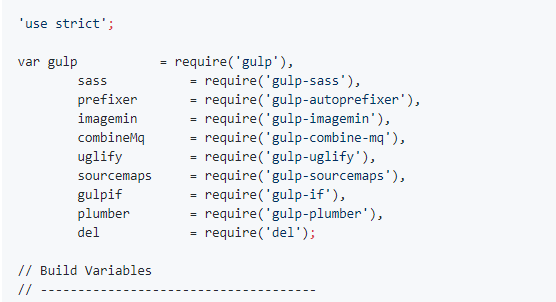
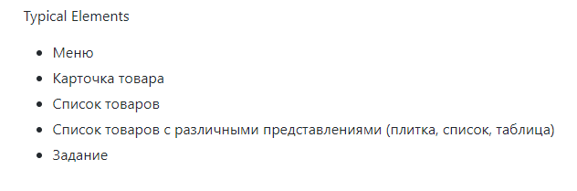

Навигация по статьям
GulpProject
Конфигурационный файл для сборшика gulp.
TypicalElements
Типичные элементы используемые на странице
ToolTip
Всплывающие подсказки

SlickSlider
Руководство по иницилизации плагина.

PopUp
Руководство по иницилизации плагина.

Parallax
Эффект parallax

CustomTabs
Собственные табы на сайт.

customSelect
Руководство по иницилизации плагина.

Ajax
Статья о Ajax

elementEffect
Эффекты наведения